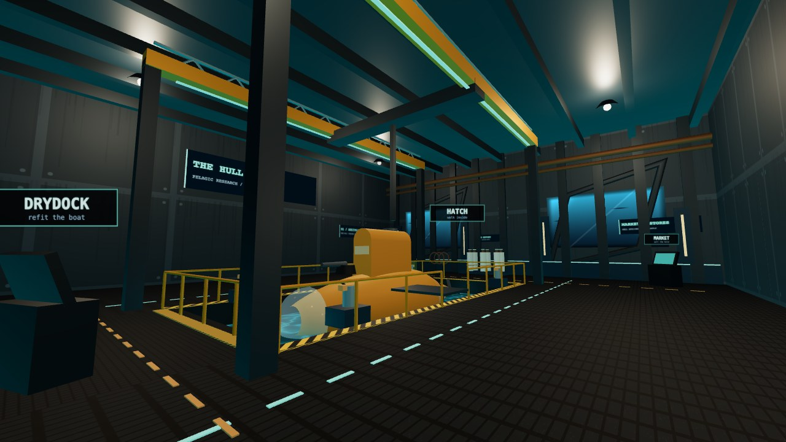
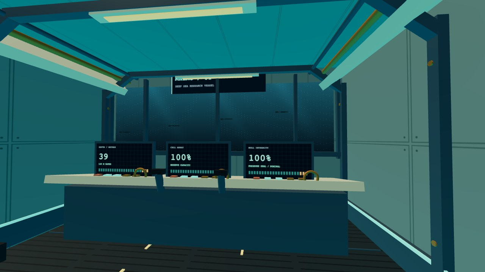

Notes from the Hull / 01
A little knowledge.
A little more air.
Your first dive, your first catch, and the way home. Everything you need before the sea starts asking difficult questions.
01 / Start small
Bring something home.
- Pick a sea and press Dive. Use your own phrase, try today's sea, or continue a previous expedition. Each sea keeps its own progress.
- Find a fish. Hold the capture beam on it. Right mouse on a computer, LT on a controller, or BEAM on touch. Shooting a fish does not put it in your hold.
- Follow the amber compass needle home. Slow down near the Hull's docking ring. Hold E, d-pad up, or DOCK until the clamps take you.
- Walk to the market terminal and sell your catch. Then visit the shipyard. Select a component in the rotatable preview to install it; each refit changes the model as well as your stats. The pressure casing is the first big step toward deeper water.
- Board the boat and do it again. Walk inside through the hatch, then use the helm to launch. The objective under your compass points out what comes next. The Hull tows you for free until you buy your first casing, but a lost boat still loses its cargo.

02 / Know your boat
Hands on the controls.
| Action | Keyboard & mouse | Controller |
|---|---|---|
| Move / look | WASD / mouse | Left / right stick |
| Rise / descend | Space / C | A / B |
| Boost | Shift | Left stick click |
| Capture / fire | Right / left mouse | LT / RT |
| Sonar / lamps | R / F | X / Y |
| Dock | Hold E | Hold d-pad up |
| Change weapon | 1–4 or Q / wheel | LB / RB |
| Chart / pause | M / Esc | Back / Start |
| Walk inside submarine | V, or the pause menu | D-pad right |
| Use a station terminal | E | A |
On a touch screen, use the left side to move and the right side to look. The labelled buttons handle the rest. Landscape gives the viewport more room.
Sonar reveals the shape of the floor. It also makes contacts answer in sound. Listen for the Hull's two-note beacon when it's time to return.
Your boat / inside and out
A pressure hull you can walk.
Press V at sea or choose Walk inside submarine in the pause menu. Your boat holds position while you explore. Use WASD, a controller, or touch to walk; use E, A, or the on-screen prompt at a component.
The panoramic bridge returns you to piloting. Behind it, the research bay has a live hydrophone display and an interactive marine field guide. The aft bay contains specimen canisters, modular cells, a crew berth and the airlock. Use the lighting panel beside the aft locker to switch to night watch. Engineering shows your hull and casing status; the battery bank and specimen storage show their current capacity. At the Hull, engineering opens the shipyard and the rear hatch lets you disembark. Battery, cargo, reactor and repair upgrades change the equipment inside too.

Sound starts off. Enable the quiet mix and adjust its volume in the pause menu.
03 / The light runs out
Five bands. One sea.
| Band | Depth | What waits |
|---|---|---|
| Sunlit Shelf | 0–90 m | Warm water, familiar shapes, your first catches. |
| Kelp Cathedral | 90–240 m | Green columns and something moving between them. |
| Twilight Drift | 240–520 m | The last light above. Watch the silhouettes. |
| Midnight Reach | 520–980 m | Plankton, lures, and the reach of your lamps. |
| The Forgetting | 980 m+ | The sea keeps its strangest memories down here. |
Your starting casing is rated to 140 m. A waypoint is not a guarantee of safety. Watch your depth and rating; pressure damage means you need to climb. Stronger casings open more of the water column.
Encounters / beyond the shoals
Leave room for the giants.
The sea now carries peaceful whale pods, giant squid and rare mythical animals. Watch them from the helm: a clear, close view logs a first sighting and earns a one-time research fee. These animals cannot be captured and do not attack your submarine.
| Animal | Habitat | What to watch for |
|---|---|---|
| Humpback whale | 12–230 m | Travelling pairs, long flippers and broad tail flukes. |
| Orca | 8–190 m | Fast pods, tall dorsals and white eye patches. |
| Giant squid | 190–900 m | Copper mantles and ten arms. A close approach triggers an ink-and-jet escape. |
| Glass serpent | 480–1450 m | A rare, long-bodied myth with antlers and a luminous crest. |
| Cathedral ray | 760–1560 m | A rare abyssal animal with branching wings, a crown of spires and twin ribbons. |
Open Field guide while aboard to check your sightings and research fees. Depth ranges are habitats, not a promise of an encounter; the largest animals need open water. Upgrade the pressure casing before searching the deeper bands.
04 / A record of the living
Four stamps. A full plate.
Each species has four codex stamps: a first catch, a rarer specimen, a mutant, and a catch from deep in its own band. Naturally mythic species earn their rarity stamp with a mythic catch.
The manifest lists the stamps you're missing, including the exact depth needed for the deep stamp. Complete a species' plate for a one-time reward. After the first-dive goals, the objective suggests research within your casing rating.
05 / Leave a light on
Your seas stay with you.
Progress is saved in this browser, on this device. The game keeps up to twelve seas. Use Continue or Your seas on the game menu to return to them.
A shared phrase link shares the sea's shape, not your inventory or progress. Your saves are not an account or a cloud backup; clearing site data or switching browsers won't carry them over.
After the game has loaded online and its offline cache is ready, it can be reopened without a connection. A browser that supports installing web apps may let you add it to your home screen. First visits still need an internet connection.
06 / Before you go
A few things worth knowing.
Does it cost anything to play?
No. You can play in your browser without an account or purchase.
Why is the game running slowly?
Open the pause menu and choose the faster graphics option. Close demanding tabs. Mnemoquarium needs JavaScript and WebGL; graphics availability depends on your browser and device.
Why can't I hear anything?
Check the sound setting in the pause menu. Tap or click the game again; some browsers require a fresh gesture before they will start audio.
Can I share a sea?
Use Share in the game menu or photo mode. Anyone using the same phrase explores the same seeded sea, with their own boat and progress.
Where can I report a problem?
Report it on GitHub ↗. Include your browser, device, sea phrase, and what happened just before the problem.